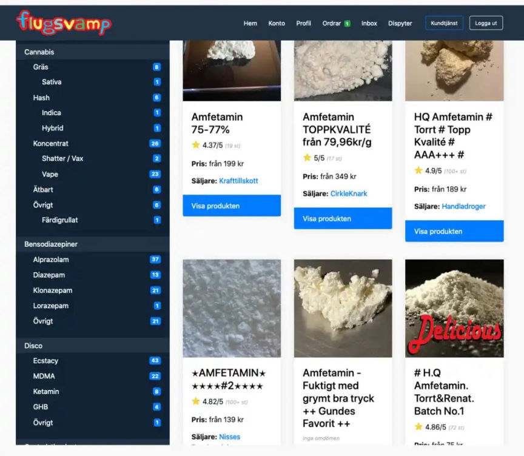

Flugsvamp 2.0 Admin added to Europe "Most Wanted" list
~1 min read | Published on 2022-12-07, tagged Darkweb-Market, Market-admin using 207 words.

Former operator of Flugsvamp 2.0, Sweden's long-running darkweb market, is now a international fugitive after escaping the country on the last day of his trial. Alexander Gustafsson, 30 years old, is accused of being the mastermind behing of the former marketplace. Which was open from 2015 to 2018. Like its predecessor, Flugsvamp 2.0 catered specifically to Swedish residents, used Bitcoin as its payment method, and was a drugs-only market.
He is now on the Europe most wanted fugitives list. In June 2022, he got sentened to 11 years and 8 months in prison and ordered to pay a fine of 1,479 BTC($24.44 million at today's prices). Over 450,000 BTC addresses have been associated with transactions made on Flugsvamp 2.0, leading to law enforcement’s identification of thousands of buyers in Sweden.
Flugsvamp translates to fly agaric, which is a specific type of psychoactive mushroom. The first Flugsvamp darknet market was founded in Feb. 2014 as a means for Swedish residents to safely buy and sell drugs. It was shut down in Nov. 2014 during Operation Onymous, which dismantled other markets across Europe, as well. The most recent iteration of the market is Flugsvamp 4.0, which was founded in the second half of 2021 and is currently still in operation.
Sources: svenskamorgonbladet
expressen.se
Former operator of Flugsvamp 2.0, Sweden's long-running darkweb market, is now a international fugitive after escaping the country on the last day of his trial. Alexander Gustafsson, 30 years old, is accused of being the mastermind behing of the former marketplace. Which was open from 2015 to 2018. Like its predecessor, Flugsvamp 2.0 catered specifically to Swedish residents, used Bitcoin as its payment method, and was a drugs-only market.
He is now on the Europe most wanted fugitives list. In June 2022, he got sentened to 11 years and 8 months in prison and ordered to pay a fine of 1,479 BTC($24.44 million at today's prices). Over 450,000 BTC addresses have been associated with transactions made on Flugsvamp 2.0, leading to law enforcement’s identification of thousands of buyers in Sweden.
Flugsvamp translates to fly agaric, which is a specific type of psychoactive mushroom. The first Flugsvamp darknet market was founded in Feb. 2014 as a means for Swedish residents to safely buy and sell drugs. It was shut down in Nov. 2014 during Operation Onymous, which dismantled other markets across Europe, as well. The most recent iteration of the market is Flugsvamp 4.0, which was founded in the second half of 2021 and is currently still in operation.
Sources: svenskamorgonbladet
expressen.se